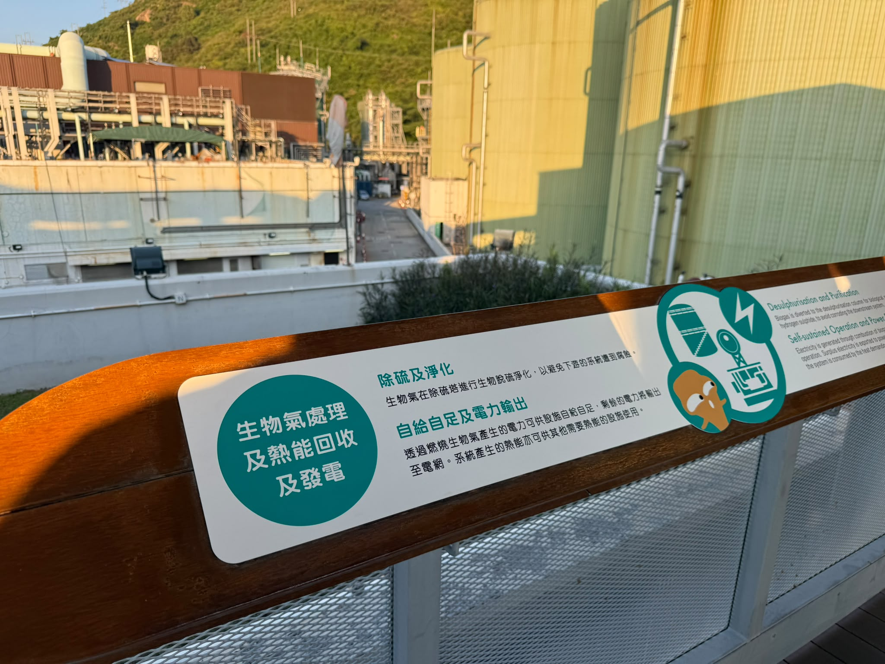
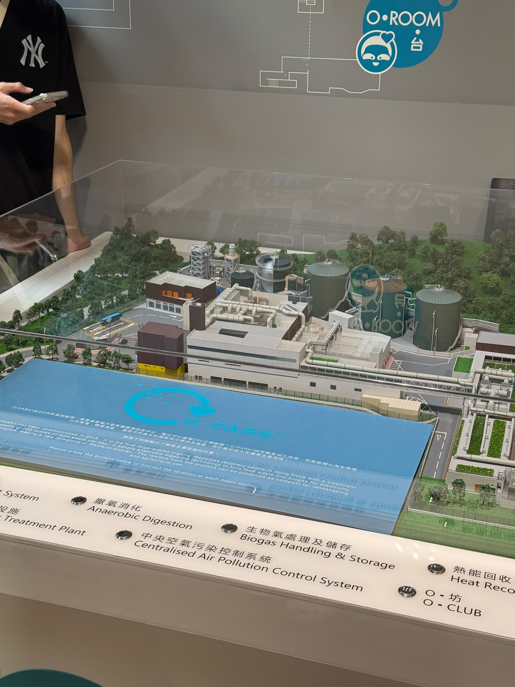
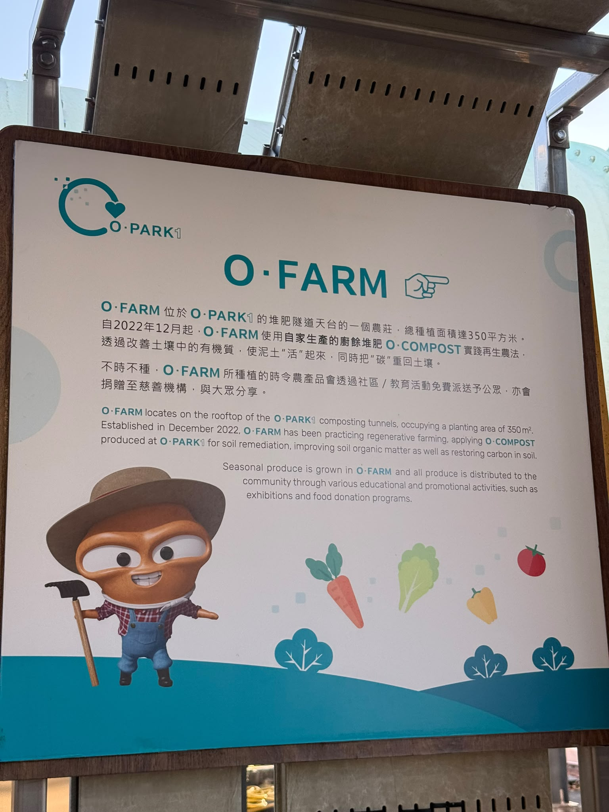
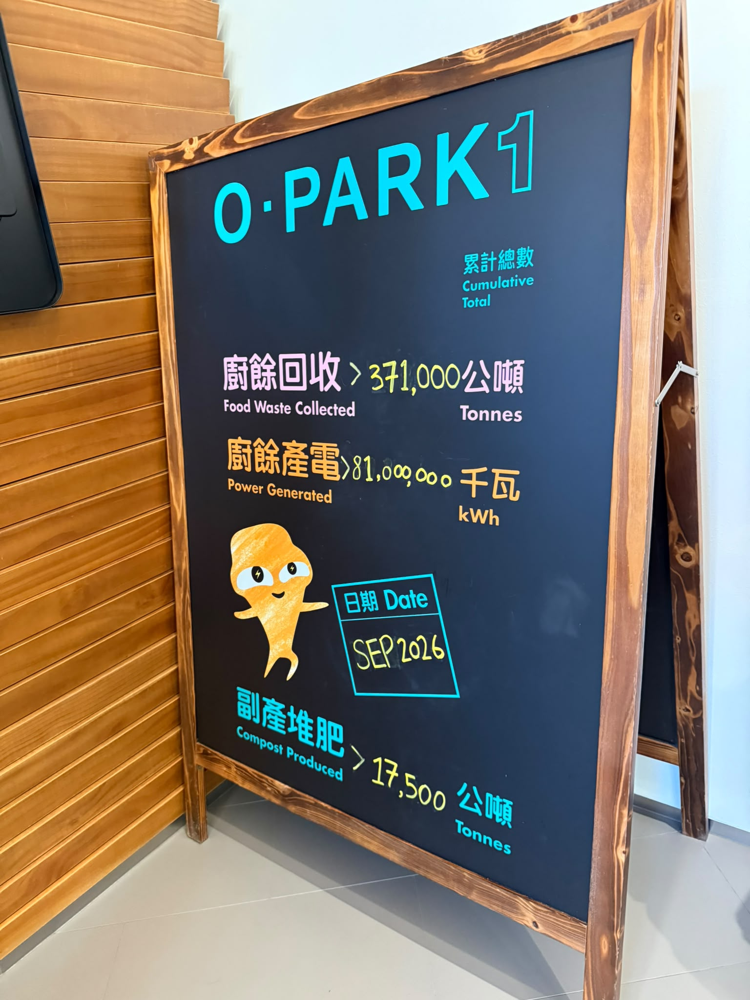
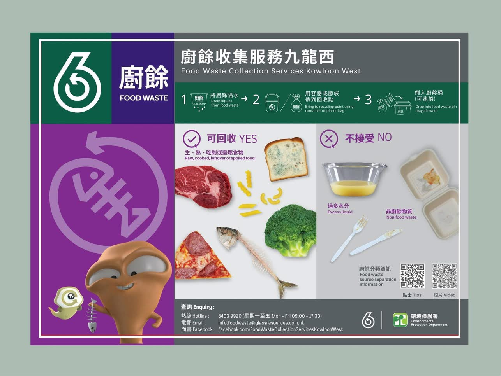

O·PARK1 · 實地參觀一份中大校園廚餘研究。
從餐盤出發，看見回收之後的事。
廚餘的下一站
香港中文大學
學生問卷與前線訪問
2026.09.20—10.06
問卷樣本 n = 61
願意回收，
為何還沒行動？
從「我願意」到「我有做」，中間還有一段距離。我們訪問校園餐飲場所，亦向學生了解回收習慣。
70.5%
願意主動分類及回收
43／61 人，同意或非常同意9.8%
經常或幾乎每次回收
6／61 人，包含不適用者的全樣本比例問卷定義與樣本限制
來源：我們的《食得「伍」浪費中期研究報告》，依報告內圖表及文字整理。收集期為2026年9月20日至10月6日，共61人。樣本包括53名本科生及8名研究生，43人為四年級或以上，只有13名宿生，15人每週沒有在校園用餐。結果反映本組受訪者情況，不宜推論全體中大學生；本次未附原始CSV。
「願意回收」為Q11的同意與非常同意合計；「經常回收」為Q12的經常與每次／幾乎每次合計，分母61人，包括9名不適用／沒有使用機會者。圖表四捨五入後的總和可能略有差異。改善措施為複選。
回收現場的聲音
五間場所、六名受訪者的經驗，讓回收流程中的人被看見。以下是訪問節錄與摘要，並非全校設施審計。
「大家行多步啫嘛。」中大大膳堂餐廳經理 · 訪問節錄

認識 O·PARK1
位於北大嶼山小蠔灣的有機資源回收中心，讓已分類的廚餘，走進另一個循環。
O·PARK1 是香港首個有機資源回收中心。廚餘在這裡經過厭氧消化，產生可用於發電的生物氣；消化後的殘渣則可製成堆肥。
200
閱讀 O·PARK1 官方簡介公噸／日
設計廚餘處理量
同一份廚餘
兩條資源路徑
廚餘如何轉化？
先接收、去雜質，再交給微生物。選擇一個環節，看看廚餘正在經歷甚麼。
資料：O·PARK1 設計流程。溫度、日數及處理量為官方流程／設計資料。
堆肥，讓土壤再生
廚餘的旅程，可以在另一株蔬菜上繼續。

55°C
隧道堆肥溫度約數
消化殘渣經脫水後，送到堆肥隧道，在約55°C的環境處理約20日。製成的堆肥含有機物與植物養分，可應用於園林綠化和農業。
在 O·FARM 看見循環
現場介紹牌記載，O·FARM 於2022年12月起運作，位於堆肥隧道天台，種植面積約350平方米，以自家生產的 O·COMPOST 改善土壤有機質，並透過社區及教育活動分享農產。
1 份堆肥至少 5 份泥土
這是 O·PARK1 產品作基肥的官方混土建議，須按土壤情況調整。
查看官方堆肥使用說明由微生物開始
把能量接回電網
生物氣，點亮下一站
廚餘在無氧環境中分解，產生生物氣。經除硫淨化後，生物氣進入熱電聯產系統。
厭氧消化↓生物氣除硫與淨化↓熱電聯產
產生的電力先供中心運作，剩餘電力輸出電網；系統的熱能亦供其他設施使用。
1,400 萬度
官方預計每年可輸出的剩餘電力
約相當於3,000個家庭用電量
以上是設計／預計比較，並非最新實測年產量。來源：O·PARK1

照片中的累計成果
截至看板所標示的2026年9月
>37.1 萬公噸廚餘收集量
>8,100 萬kWh 產電量
>1.75 萬公噸堆肥產量
以上三項為專題提供照片的累計看板紀錄，並非即時數據或年產量；產電單位依照片英文 kWh 表示。
兩個回收桶
兩段定位紀錄
離開校園後，去哪裡？
我們把兩個藍牙追蹤器，分別放在善衡書院飯堂和崇基書院的廚餘回收桶，跟隨收運後留下的定位紀錄。
善衡書院飯堂出發
校園、坪輋，再到粉嶺業豐街。
崇基書院回收桶出發
九肚山、小瀝源及大水坑一帶。
正在載入兩組定位紀錄。
綠色路段，看移動方向
沿已記錄的位置播放卡通廚餘回收車。點位按提供資料概略標示，動畫連線表示觀察次序，並非實際行車道路。
黃色虛線，看預測去向
最後觀察點之後的黃色路段，延伸至我們推測的處理設施。預測根據零散定位及設施位置，尚待收運紀錄確認。若追蹤器附在可重用桶上，卸料後亦可能與廚餘分開。
把視野移向海外
別的地方，怎樣做？
從秤重記錄、源頭分類到餐桌習慣，不同做法為校園帶來不同啟示。
新加坡
日本
「校園啟示」為本專題的延伸思考，並非上述地區已在中大實施的制度。
找到廚餘的下一站
搜尋屋邨、屋苑或樓宇，查看智能廚餘桶的位置。
公共屋邨／屋苑名單
資料截至2026年9月30日
正在載入221個屋邨／屋苑條目。
回收位置資料（JSON）名單每列代表一個屋邨／屋苑，並非一個回收桶；實際開放安排以現場及官方資料為準。
把一餐之後的事
變成順手的事
廚餘桶，這樣用
先看機身指示，再按設施要求操作。不同機型的開蓋及記錄方式可能不同。
分開，瀝乾
把食物與膠袋、包裝、紙巾及餐具分開，瀝走多餘水分，以可重用容器盛載。
掃碼開蓋
依桶身指示掃描「綠綠賞」手機或積分卡的會員二維碼，開啟投放口。
只投入廚餘
投入可接收的食物，帶走容器和膠袋；過硬、過大的骨頭或殼不要放入。

環境保護署廚餘收集服務海報 確認完成
待桶蓋關閉並完成記錄，保持投放位置整潔。以現場指示為準。
可以先分類
剩飯、麵、蔬果、肉類及其他可接收食物。生熟食物均可能屬可回收廚餘，按機身標示分類。
記得帶走
膠袋、餐盒、紙巾、餐具及包裝。不要把容器連同廚餘一起倒入。
參考：政府新聞網「智回收 惜廚餘」及香港減廢網站智能回收系統。接收種類與積分安排以現行機身說明為準。
把理解變成一次行動
廚餘運送挑戰
駕駛小車，收集食物殘渣並送到回收站。繞過包裝垃圾，完成五份廚餘的回收旅程。
遊戲載入中。啟用JavaScript後即可使用方向鍵或畫面按鈕遊玩。